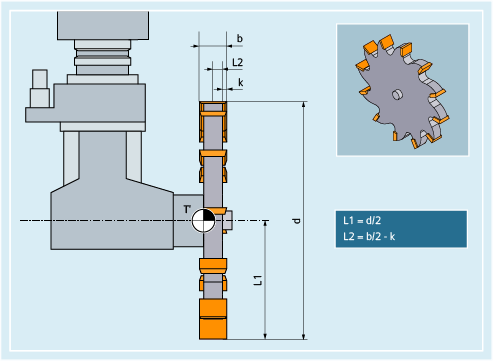

Innerhalb der Werkzeuggruppe "Sonderwerkzeuge" gibt es folgende Werkzeugtypen:
700 | Nutsäge |
710 | 3D-Messtaster |
711 | Kantentaster |
712 | Monotaster |
713 | L-Taster |
714 | Sterntaster |
725 | Kalibrierwerkzeug |
730 | Anschlag |
731 | Pinole |
732 | Lünette |
Die folgende Abbildung gibt einen Überblick, welche Werkzeugparameter beim Werkzeugtyp "Nutsäge" in den Korrekturspeicher eingetragen werden:
T' | Werkzeughalterbezugspunkt |
L1 | Geometrie - Länge 1 |
L2 | Geometrie - Länge 2 |
d | Durchmesser |
b | Nutbreite |
k | Überstand |
Werkzeugparameter | Bedeutung |
|---|---|
$TC_DP1 | Werkzeugtyp |
$TC_DP3 | Geometrie - Länge 1 |
$TC_DP4 | Geometrie - Länge 2 |
$TC_DP6 | Durchmesser |
$TC_DP7 | Nutbreite |
$TC_DP8 | Überstand |
$TC_DP21 | Basismaß Länge 1 |
$TC_DP22 | Basismaß Länge 2 |
$TC_DP23 | Basismaß Länge 3 |
| |
Siehe auch:
Übersicht